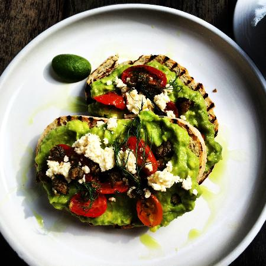
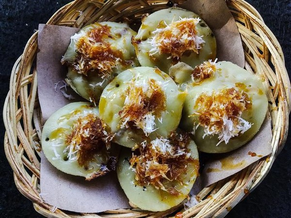

B'tutu
"Betutu is a traditional Balinese dish made from chicken or duck that is marinated with a rich blend of spices, wrapped in banana leaves, and slow-cooked until tender. The dish is known for its flavorful and aromatic taste, making it a favorite among locals and tourists alike. Betutu is often served with rice and a variety of Balinese side dishes"
Menu
B'tutu

Betutu is a traditional Balinese dish made from chicken or duck that is seasoned and marinated with a rich blend of spices. The meat is then wrapped in banana leaves and slow-cooked until tender. This dish is known for its aromatic flavors and is often served during special occasions and ceremonies in Bali. The spices used typically include turmeric, ginger, garlic, shallots, and chili, giving the dish a distinctive and flavorful taste.
Lawar

Lawar is a traditional Balinese dish that consists of finely chopped meat, vegetables, grated coconut, and a rich blend of spices. It is often made with pork or chicken, but variations with other meats or even vegetarian versions exist. The dish is known for its complex flavors, combining the freshness of the vegetables with the richness of the meat and the aromatic spices. Lawar is typically served during Balinese ceremonies and festive occasions, and it is enjoyed for its unique taste and cultural significance. The spices used in Lawar often include turmeric, galangal, kaffir lime leaves, and chili, which contribute to its distinctive and flavorful profile.
Avocado Toast
Avocado Toast with Balinese Style is a fusion dish that combines the creamy texture of ripe avocados with the vibrant flavors of Balinese cuisine. The toast is topped with mashed avocado, seasoned with a blend of traditional Balinese spices such as turmeric, ginger, and chili. It is then garnished with fresh herbs and a sprinkle of grated coconut, adding a tropical twist to the classic avocado toast. This dish offers a unique combination of smooth avocado and aromatic spices, making it a delightful and flavorful breakfast or snack option.
Laklak
Laklak is a traditional Balinese dessert made from rice flour and coconut milk, often colored with natural dyes from pandan leaves or other ingredients. These small, round cakes are typically steamed and served with grated coconut and a drizzle of palm sugar syrup. Laklak is known for its soft, chewy texture and sweet, aromatic flavor, making it a popular treat during Balinese ceremonies and festivals. The combination of the rich coconut and the sweet palm sugar creates a delightful balance of flavors that is both satisfying and unique.